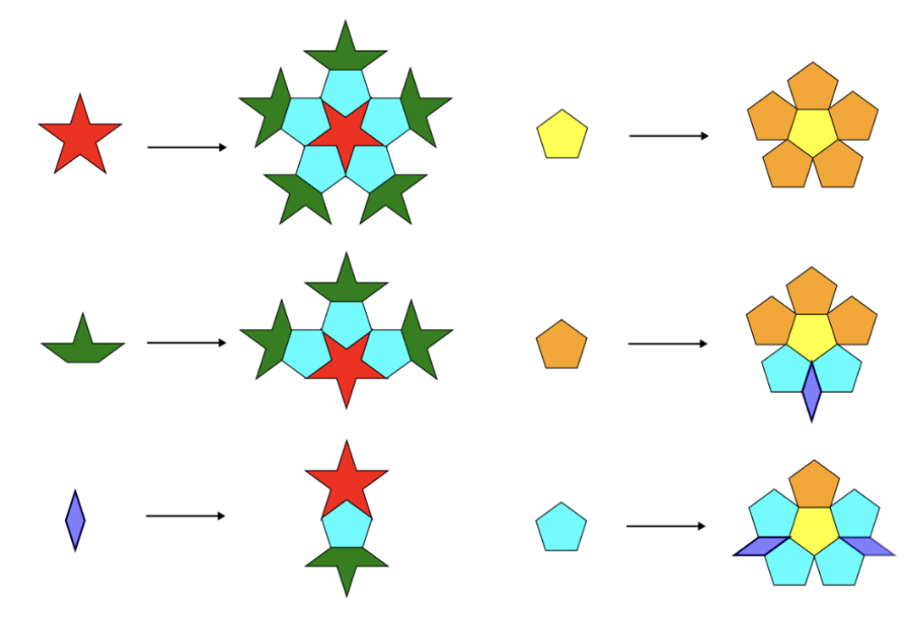
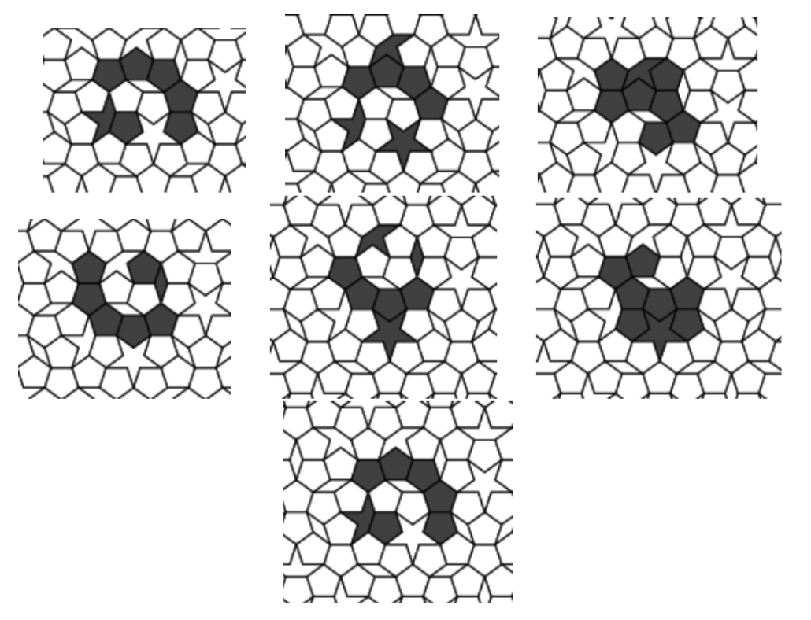
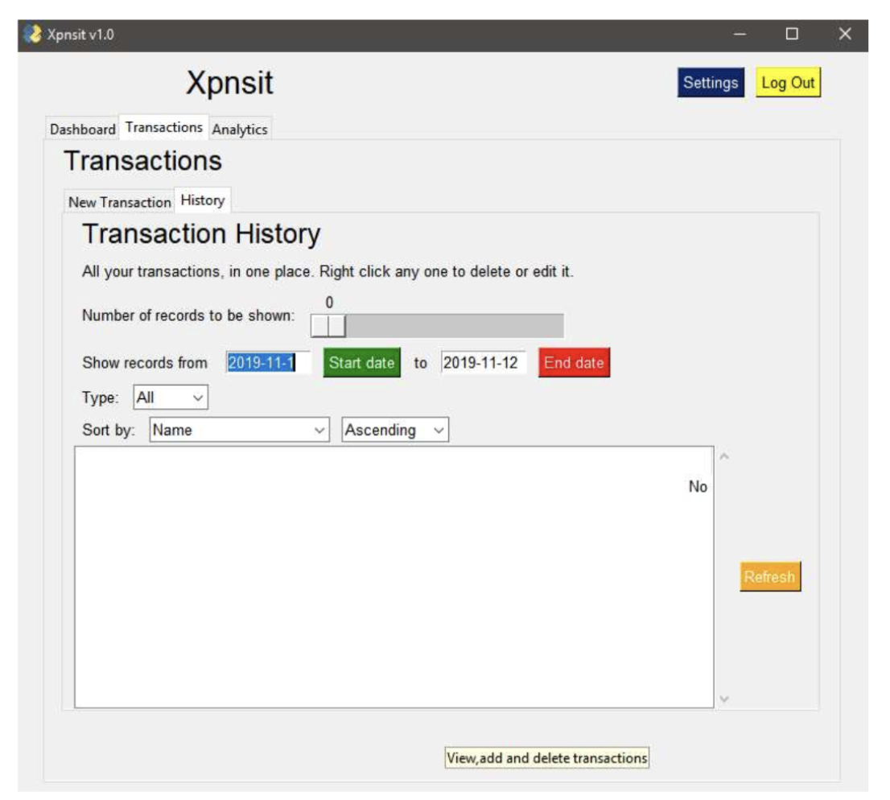

Raghav Goel
Computer Science and Math Teacher, Software Developer, User Interface Designer
Hello, and welcome to my website! I am a teacher, with experience teaching math and Computer Science, as well as developing software for educational, professional, and digital literacy oriented purposes. I enjoy mathematics, programming and problem solving, and learning about languages and cultures. I am passionate about helping people understand things, and using my knowledge and skills to help create better humans and a better world.
About me
Current Position: I am currently a Computer Science Teacher at St. Stephen's Episcopal School in Austin, TX. For the 2026-27 school year I am teaching high-school courses on Python, Web Development, and Machine Learning/AI.
Education: BS Mathematics, BA Computer Science from Denison University, Ohio. (Graduated 2024)
Previous Experience:
- 2024-2026: Taught and designed curriculum for middle school mathematics (Pre-Algebra/Algebra 1) at Headwaters School in Austin, TX. I used a mixture of traditional and technology-assisted teaching, incorporating tools like Desmos and Brilliant into my lessons.
- 2022-2024: Teaching assistant for Multivariable Calculus and Linear Algebra under Dr. Sarah Wolff at Denison University.
- Summer 2023: Software Developer Internship at EDvera, Inc. in Granville, OH, where I developed new features for a large legacy Ruby-on-Rails application.
- Summer 2022: Summer Research Assistant under Dr. May Mei at Denison University, where I worked on designing, implementing and experimenting with Conway's Game of Life on the P1 Penrose Tiling. (see Projects for more details)
Projects
(Click to expand.)
- Barakunji/Hindi Flick is a mobile keyboard layout based upon the Devanagari varnamala's (alphabet) clustering of syllables. It is intended to be usable by anyone who knows the varnamala. It is inspired by the flick-based layouts popular in Japan and (to a lesser extent) Korea, as well as Vietnamese TELEX with regards to diacritic rules and magic.
- The Hindi language has long been plagued by a lack of good input methods. For example, the government standard INSCRIPT keyboard has been around since the 80s but has seen minimal adoption.
- I wanted to create a simpler solution for typing Hindi in the Devanagari script. The challenge being that Devanagari has a complex set of 33 vowels and consonants, with a large part of the script being made up of consonant-vowel pairs.
-
I like learning about other languages and the ways they interact on the internet,
and
found
the Japanese, Korean and Vietnamese keyboards to be particularly interesting:
- They all use non-Latin or modified Latin scripts with widespread internet adoption
-
They all made interesting innovations to suit the needs of their languages:
- Vietnamese TELEX uses a system for diacritics where you can change the tone by pressing a different letter at the end of the word,
- the Japanese 12-key utilizes the ordering of the Hiragana and Katakana syllabaries to minimize the number of keys needed, as well as having an interesting flick-based typing system,
- and Korean keyboards use dots and bars to create the various vowel signs.
- Taking inspiration from these sources, I began working on a concept for a flick-based keyboard for Hindi around 2021, and developed it on and off while in college, eventually implementing it using Keyman Developer around 2023-24.
- As of August 2026, the keyboard has been downloaded around 1500 times, and I'd like to extend it in the future with autocomplete support and for other Indian scripts too.

- In the summer of 2022, I, along with Zheng Fang and Mandy Hong did research on Penrose Tilings under the supervision of Dr. May Mei at Denison University, with the goal being to mudify Conway's Game of Life and see if there are any objects of note that we could find. Each of us used a different Penrose tile set to experiment on, and I worked on the P1 (Boat and Star) version specifically.
- Using Julia as our programming language due to its speed and easy to use syntax, over 14 weeks I implemented a way to draw a Penrose tiling using substitution rules, invented rules for the modified Game of Life we'd be simulating, and ran experiments in search of objects like "still lifes", "oscillators", and "gliders".
- In my experiments I found many still lifes and oscillators, but unfortunately wasn't able find any gliders. Still quite a fun and fruitful project though!


-
Manim is an open-source Python animation library created by Grant Sanderson for animating his 3Blue1Brown videos. The community version was created to make the library more user-friendly, structured, tested, and extensible.
-
I was one of the original founders of the Manim Community project back in 2020.
-
As a maintainer, I wrote documentation, rewrote parts of the codebase to be more user friendly, created previously non-existent test cases, and provided technical support to users over Discord and GitHub issues.
Chanim (GitHub)
-
An extension for Manim which enabled the usage of chemical figures and reaction diagrams through the Chemfig TeX package.
-
Created two videos for my personal channel which have garnered nearly 20,000 views in total:

Xpnsit (GitHub, Project
Report)
- Back in high school when I was first learning programming, I was inclined towards doing something different from everyone else: while everyone was building relatively simple command line based apps for their final projects, I chose to instead create a GUI connect it (painstakingly) to a MySQL database.
- This was one of my first forays into application design and development, and taught me a lot about UI/UX principles, callbacks, understanding control flow and state, and how to connect, query,retrieve, and display data from an SQL database.
- The idea was to create a personal expense management app which included a login/signup, credit/debit transaction logging, and visual analytics on account metrics over a given period of time.
